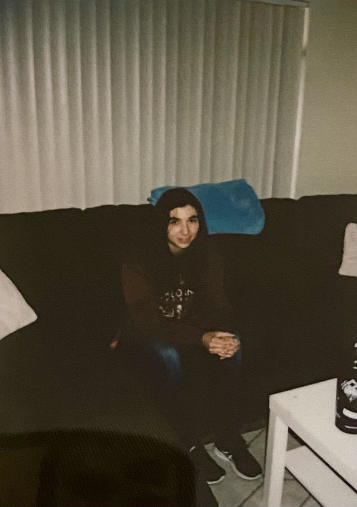

Hello! I'm a 27-year-old female with a background in healthcare who's embarking on an exciting journey into the world of web development. With a strong foundation in healthcare, I've developed valuable skills in empathy, problem-solving, and attention to detail. Now, I'm eager to channel my passion for technology and creativity into a new career path. I'm excited to learn the ins and outs of web development, and I'm ready to apply my determination and adaptability to this dynamic field. I look forward to using my diverse experiences to create innovative and user-friendly digital solutions.
I am taking this course as a part of the web development curriculum. I am hoping to build my skills and create portfolio pieces that prepare me for future projects and careers. I have had the opprotunity to learn some HTML and CSS along with Javascript for basic web development. I recently aqcuired some experience with Adobe Creative Cloud applications such as Adobe Illustrator and Adobe Photoshop.
I'm an adventurous individual who finds immense joy in outdoor activities and physical challenges. Skateboarding, rock climbing, and hiking are my passions, and they define much of my free time. They offer both mental and physical challenges. These activities not only keep me active and healthy but also foster a deep connection with nature and a sense of accomplishment that I cherish.